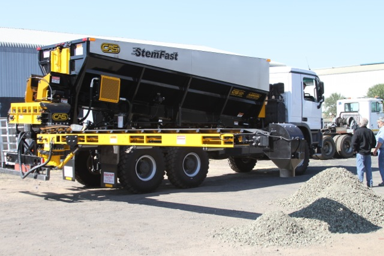

Luego de años de investigación e ingeniería, como también de experiencia en movimiento de tierra, corteza, gravilla, cemento, nitrato de amonio y otros materiales, hemos implementado un nuevo camión gravillero (Stem Fast) que revolucionará la antigua forma de gravillar.
Este nuevo diseño de camión gravillero que vende R&R Equipos, incorpora un transportador de alimentación cruzada trasero y un transportador de descarga más largo para que el operador pueda ver desde la ventana de la cabina mientras se descarga a la perforación. También incluye un gran estanque de agua que rociará una cantidad adecuada de agua sobre el material mientras sale para así controlar la cantidad de polvo. Adicionalmente, cuenta con el medidor para la cantidad de material que se va utilizando, de tal forma que nuestro cliente podrá determinar cuántos metros de gravilla quiere en la perforación.
Capacidades:
- Tolva de 15.3 Metros cúbicos.
- Tolva de 11.2 Metros cúbicos.
- 100% Soldadura de acero con revestimiento exterior e interior.
- Correa transportadora de 24 pulgadas de ancho.
- Podemos construir cualquier longitud requerida para la eficacia máxima del transportador de colocación para llegar a cualquier lado de la camión.
- Controles hidráulicos con válvulas proporcionales Hawe para un control preciso del sistema y panel de control Plus 1 (en la cabina) permite al operador opere la unidad en la cabina del chasis.
- Un sistema de cámara se instala para ver el transportador de descarga y también en el transportado transversal en la parte trasera del cuerpo.